Fit matters before access.
Audience size and location help a business judge whether an event is suitable.
DESIGN RESPONSE → Show event context early.PRODUCT DESIGN · SERVICE DESIGN · MOBILE UX
Connecting small businesses with local events.
Finding an event is only the first step. Businesses need enough context to judge whether it is worth attending, while organisers need a clear way to publish details, manage applications and coordinate participation.
Synkro explores how both sides could work through one connected platform, including a way to review a site plan and choose a preferred stall before committing.
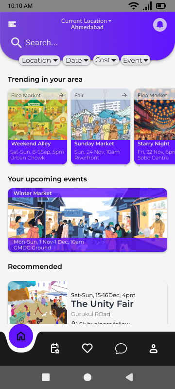
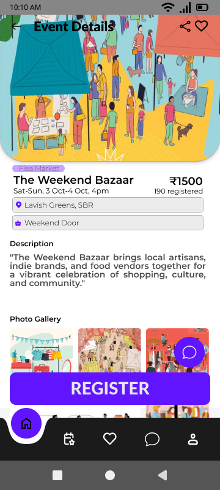
A participation journey spread across channels, rather than a single connected flow.
Finding, joining and managing an event can become a chain of separate conversations, forms and decisions.
Small businesses may discover events through social media, word of mouth, messaging groups or direct outreach. Details such as audience, location, cost, registration and logistics can be spread across different channels, making opportunities harder to compare before committing.
The design opportunity was not simply to create another event listing. It was to bring the information and decisions surrounding participation closer together.
The questionnaire focused on how small-business owners discover events, what they need before signing up, and where participation becomes difficult.
Audience size and location help a business judge whether an event is suitable.
DESIGN RESPONSE → Show event context early.Participation fees and expected value affect whether an opportunity feels worth pursuing.
DESIGN RESPONSE → Make decision-critical details easier to compare.Information, communication and logistics continue to matter after discovery.
DESIGN RESPONSE → Connect event details with participation tasks.Small-business owner responses informed the business-side priorities. No post-launch or usability validation is claimed.
Synkro was designed around two sets of responsibilities. The business owner needs to assess an event and manage participation; the organizer needs a structured way to publish information and coordinate the people applying.
Discover opportunities, compare the details, register, select a preferred stall and keep track of participation.
Create and publish event details, review applications, share the site plan and coordinate participants.
The organizer-side flow is a design response to the needs of the overall system, not a claim that this group was extensively interviewed.
The information architecture mapped distinct entry points and tasks for each role, while keeping shared event information and participation records connected beneath them.
The business and organizer journeys move in parallel, meeting around event information, applications, stall allocation and communication. Select a step to see the task it represents.
Discover events through a more structured, comparable listing rather than relying on scattered sources alone.
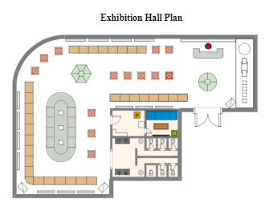
Stall 14 is selected as your preferred location.
Interactive concept only. No reservation is created.
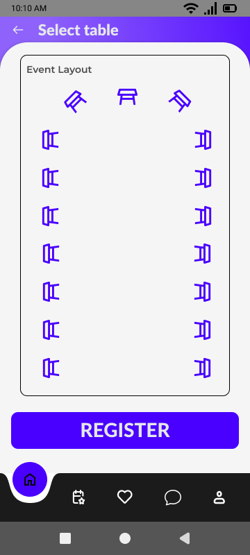
Participation does not end at registration. Where a stall sits can affect how visible a business is during an event.
Synkro treats stall selection as part of the decision rather than something revealed only after a business commits. Organisers publish an event layout and businesses can inspect available positions before choosing a preference.
The project context included the risk of unclear middleman arrangements and poor stall placement. Making the plan visible is intended to give businesses more information and control before committing.
The floor-plan interaction is a portfolio demonstration of the selection logic; it is not connected to a booking backend.
The work moved from mapping the two sides of the service to exploring screen hierarchy and then developing a visual system. The interface uses purple as the core brand colour, supported by lavender and coral accents to distinguish actions and information without making every screen compete for attention.
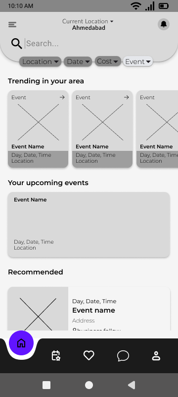
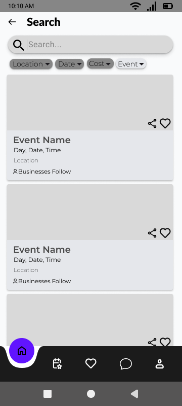
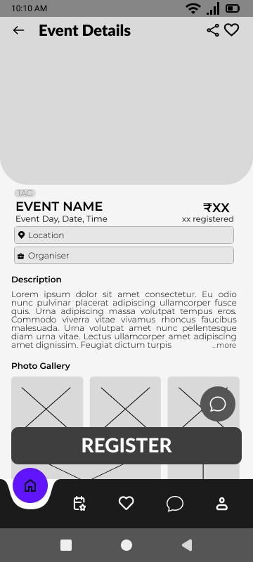
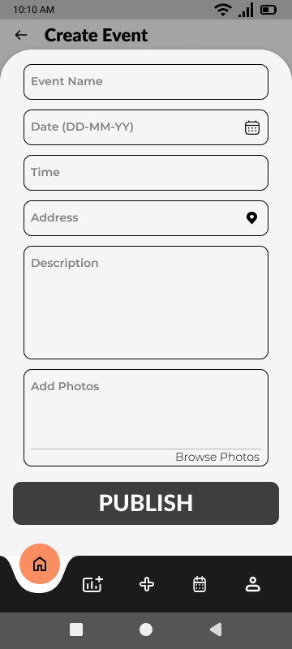
These screens show the business-side discovery and evaluation experience alongside the organiser tools for managing events and selecting a table layout.
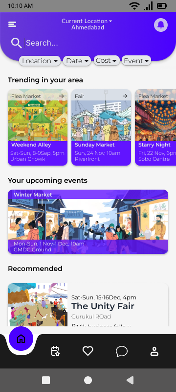
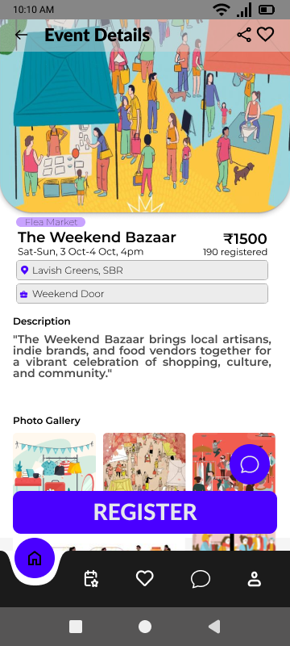
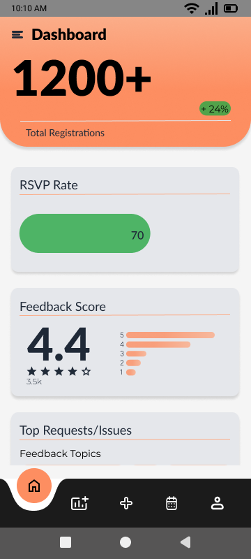
Synkro pushed me to think beyond individual interfaces and consider how separate tasks connect across two user groups.
A two-sided service needs more than two sets of screens. Shared information, hand-offs and timing have to make sense across the whole journey.
The concept has not been validated through live event participation. The discovery, stall-selection and organizer workflows would need to be tested with both groups.
Intended outcomes, not measured impact: Synkro aims to give businesses clearer event context and more control over participation, while helping organizers coordinate information and applications more consistently.